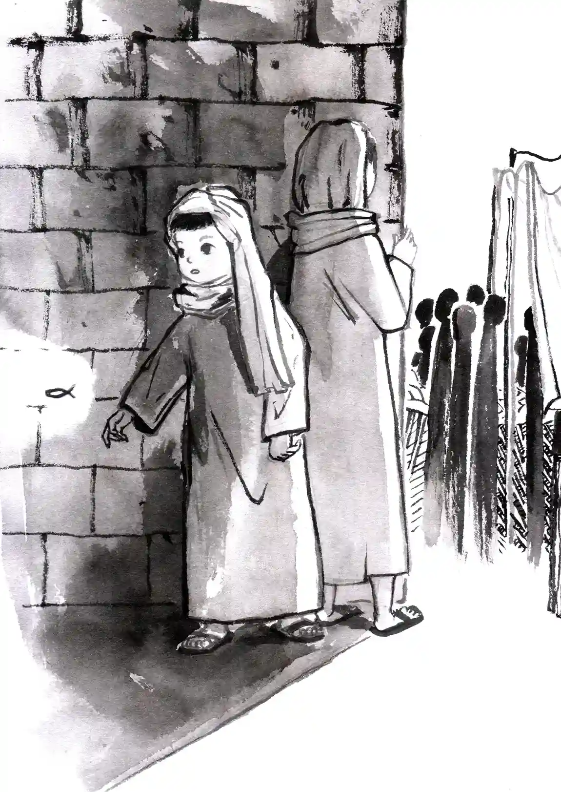

第8章

不出徐心昀所料，身側的水泥牆已在不知不覺間從冰冷的觸感轉為濕軟鬆垮的土質牆壁。她沿著狹小的通道繼續往前，熟悉的地下城再次出現在眼前。
「如果說要把自己放到死胡同裡，地下城絕對是最好的選擇吧！」徐心昀在心裡暗道：「這裡的基督徒經常要面對許多逼迫與困境，但也正因為如此，他們才會覺得 神很真實吧！因為這些困難挑戰，他們才能對上帝堅信不疑，願意去傳福音。或許在這裡多生活幾天，發生在他們身上的神蹟，我也可以切身體會。」
想到這些，徐心昀不自覺的加快了腳下的步伐，同時活動著身體。雖然是第二次穿越，但擁有男性的身子，還是讓她感到有些不適應。
「我現在是伯里克利、我現在是伯里克利⋯⋯」徐心昀在心中不斷默念著，努力催眠自己，期待能盡快習慣地下城的新身份。從現在開始，她就是伯里克利了。
伯里克利一邊查看周圍的環境，一邊思索著：「來到這個人生地不熟的地方，果然還是得靠朋友嗎？」他心中突然閃過索弗克勒斯的身影：「看來我得先去找索弗克勒斯，畢竟剛來的時候是他帶我去倉庫的。或許他現在也在倉庫那邊？」
憑藉著稀薄的記憶，伯里克利在地下城的通道裡艱難地前行。不知道在轉過第幾個彎後，伯里克利終於來到了倉庫，那個熟悉的身影也再度出現在他面前。
只見索弗克勒斯的腳邊放著好幾個麻布袋，裡面似乎裝滿了糧食。他走進旁邊的儲藏室，不一會兩手抱著一堆的馬鈴薯搖搖晃晃地出來，一步步走向麻布袋。堆積如山的馬鈴薯擋住了索弗克勒斯的視線，即使是身強力壯的他，此時看起來仍顯吃力。
伯里克利看向索弗克勒斯，有種說不出的他鄉遇故知的喜悅，他興奮的呼喊出索弗克勒斯的名字。
似乎是被呼喚聲嚇到，索弗克勒斯身子微微一晃，幾顆馬鈴薯從懷中散落。伯里克利見狀連忙快步上前，趕在馬鈴薯掉落到地上前接住它們。
索弗克勒斯微微側頭看著他，露出不可置信的驚喜表情：「伯里克利！你去哪裡了？好幾個月沒看到你呢！可以先幫我把這些馬鈴薯裝進袋子嗎？」
「說來話長，我因為一些家裡出了點狀況，去到外地一陣子。」伯里克利胡亂編了一個理由搪塞，同時協助索弗克勒斯，齊心將馬鈴薯一股腦地放進袋子中。
「能再見到你真是令人高興！多虧了你的幫忙，我現在總算是把糧食物資都準備好了。雖然沒時間解釋太多，但我有個重要的任務，必須馬上出發，你要一起來嗎？」此時索弗克勒斯的語氣沒了最初的驚喜，反而顯得有些焦急與擔憂。
「任務？當然了，也算我一份！」雖然不知道這個所謂的「任務」是否跟自己想要尋求的答案有關，但伯里克利想著自己也不可能像無頭蒼蠅一樣在這個陌生的時代亂竄。跟著眼前的索弗克勒斯或許能更容易讓自己經歷到神蹟。
索弗克勒斯聞言點了點頭，示意伯里克利一同背起方才裝好的行囊，朝著地下城的出口移動。
剛一踏出地下城，來到地表之上，伯里克利立刻被耀眼的陽光刺的半瞇起雙眼。雖然不久前他還在炎熱的太陽底下上著體育課，但時隔幾個小時後再次看見太陽，卻仍然有種恍若隔世的感覺。
擡起手略為遮擋刺眼的陽光，伯里克利看向索弗克勒斯，不禁好奇問道：「到底發生了什麼事這麼著急啊？還有我們到底要去哪？」
「你沒聽說嗎？也是，畢竟你去外地旅行了一陣子。最近在以弗所發生了很多起的暴動。新上任的首長是一名虔誠的亞底米神（即希臘神話中的月亮女神）信徒，以弗所教會中有很多的同伴都已經被他抓了。更過分的是他推行了一系列新的政策，鼓勵百姓舉報基督徒。被舉報的基督徒會被抓到戲院裡公開批鬥、羞辱，嚴重的話甚至可能會被處死呢。」索弗克勒斯一臉擔憂的說道，在談到新政策時，驚恐中又帶有一些氣憤。
「公開批鬥？」伯里克利心裡一驚：「上次聽到這個詞的時候，還是在宣教禮拜播放的見證影片。影片裡描寫文化革命時，基督徒遭到政府抓捕與迫害的情形。當時政府也是一樣鼓勵人民舉報身邊的基督徒鄰居、朋友，甚至有兒女主動將自己信主的父母交給政府官員。被抓的基督徒會被送往礦區勞改，在勞改營一待就是三、四十年。我還以為文化革命是毛澤東首創的，原來早在西元一兩百年就有這樣的事情了嗎？基督徒也太衰了吧！怎麼每次批鬥都有我們的份？」
突然，伯里克利指著索弗克勒斯手中的大布包，慌亂道：「等一下，你的意思是說我們這趟過去隨時都會有生命危險？！不過如果政府帶頭抓捕我們的弟兄，我們也無能為力吧？還是你是打算⋯⋯劫獄？但如果是要去劫獄也不需要帶著麼多糧食吧？」雖然再次回到古代的確有一絲想將自己置身於危險當中的想法，但當他意識到自己面前真的有一個火坑時，內心還是忍不住的想要退縮。
索弗克勒斯搖了搖頭，解釋道：「怎麼可能，憑我們的力量是不可能劫獄成功的。我們這趟過去，主要是把生活必需品交給以弗所的教會。如果只是被批鬥那就算了，但新的政策中有一項最為過分，新上任的首長建了一座亞底米神像在市集前，規定凡是要進入市集的，都得先向神像下拜，下拜後政府人員會在他們的額頭蓋上印有亞底米神的入場章，只有蓋有入場章的人才能在市集裡進行買賣。以弗所城的聖徒們因為不願意向神像下拜，所以只能透過走私交易買賣生活必需品，教會的存糧也因此幾乎消耗殆盡了。」
這也太高招了吧！聽到這裡伯里克利不禁心中一凜，直接切斷聖徒們的生活來源，讓他們不得不屈服於生活。
「所以，我們這次過去，主要就是供給他們物資咯？」雖然一方面為以弗所的聖徒們憂心，但同時伯里克利心中也鬆了一口氣。如果只是去給他們物資，倒也不算太危險，就想像是去進行一場人道救援吧。
索弗克勒斯緩緩的點了頭，他的臉色嚴肅卻又堅定。
伯里克利注視著索弗克勒斯，有種說不出的既視感，總覺得對方的這個表情，好像在不久前見過⋯⋯對了，上周宣教禮拜時，創起地區宣教士的臉上也曾浮現過這樣的神情！明明是在敘述一段無比艱困的環境，但從他們的眼神與言談中，並未流露出埋怨與恐懼哀傷，反而更多的是堅毅且充滿信心。
已經漸漸適應陽光亮度的伯里克利，擡頭看向湛藍無雲的天際，忽然對接下來的行程充滿期待。
經歷了幾天的長途跋涉，伯里克利的心情已不再像最初那般興奮，取而代之的是被無盡的疲憊感壟罩。
趁著太陽隱沒在一片厚厚的雲層後面，伯里克利取下腰間的水袋，大口灌下幾口，忍不住抱怨道：「以弗所要到了沒啊？從昨天早上你就說再轉兩個彎就到了，我們都已轉了兩百個彎了吧！」
「這也是沒辦法的事，畢竟我們基督徒的身份特殊，要繞過一些對基督徒不太友善的地方。總不能還沒到以弗所就被抓走吧。」索弗克勒斯背著厚重的行囊，喘著氣對伯里克利解釋道。隨後，伸手指向前方，鼓勵道：「你看到前面那棟建築了嗎？這次是真的到了！我們現在已經算是進入以弗所城了，那個高聳的石柱就是以弗所有名的女神廟。」
聞言，伯里克利終於振作起精神，開始打量著這座傳說中的以弗所古城。他回憶起不久前在旅遊雜誌上讀到的有關以弗所的報導，那篇文章裡描述了這座在當時繁榮的城市，有著圖書館、大戲院、以及高聳的神廟。沒想到今日一見，眼前的城市遠比想像中更加繁華，各樣的娛樂設施可以說應有盡有。
以弗所好像是一條閃爍著光芒的大蛇，一座座先進的公共設施是她引以為傲的鱗片；蜿蜒的街道上點綴著絡繹不絕的商販，來往的人群拖成大蛇長不見尾的身軀；蛇的頭則是純白的亞底米神廟，雄偉而昂首地展現她的英姿。看著這些從未見過的建築與攤販陳列的新奇商品，伯里克利的心裡充滿了說不出的興奮。
正當伯里克利的視線被商販吸引之際，索弗克勒斯突然一把將他拉入旁邊的小巷。一瞬間原本耀眼的市集，轉換成髒亂狹小的深邃暗弄。
眼前突如其來的光影變化讓伯里克利感到有些不適應，正準備發聲抱怨時，卻發現索弗克勒斯一臉嚴肅的凝視著牆上一個類似魚的圖案的簡筆畫。
剛要吐露不滿之詞的伯里克利，也隨著索弗克勒斯的眼神轉向牆上的塗鴉。但他完全不明白這個魚的圖案有何特別之處，值得讓索弗克勒斯如此嚴肅。
不待伯里克利開口詢問，索弗克勒斯搶先沉聲說道：「接下來的話你聽好了，這個地方雖然繁榮，但卻像是披了糖衣的毒藥，千萬不要被他的外表矇騙了！基督徒在這裡隨時都會有可能遇到生命危險。待會你緊跟在我後面，我們過了這個巷子後，就不要再交談；路上不管遇到誰，都不要對他們做出任何回應。知道了嗎！」
伯里克利有些錯愕，下意識的點了點頭。索弗克勒斯見狀，逕自轉身快步朝著巷子的另一端走去。
隨著索弗克勒斯的步伐越發加快，伯里克利的心情也由興奮轉為緊張。只見索弗克勒斯快速的穿梭在城市的各個小巷中，彷彿已經來過千萬遍似的。
伯里克利注意到，每到一個分岔路口，街道旁的牆上都有一個標記。有時候是一隻魚的符號，有時候是那個熟悉又陌生的希臘文字「IXΘYΣ」。
伯里克利的心中的疑惑隨著每個拐彎越發的膨脹：「魚的符號到底代表什麼？『IXΘYΣ』希臘文又是什麼意思，跟魚有關聯嗎？這兩個記號看起來像是路標，正在引導著我們前行的方向，可是為什麼是魚呢？如果是路標的話，不是應該要放在更顯眼的地方，讓大家能方便找到嗎？」伯里克利強制壓抑住心中的好奇，舉起發痠的雙腿，努力跟上索弗克勒斯的腳步。
他們一路跟著魚的指引，在一幢民宅前停下了腳步。一位中年男子正在門外修剪著花木。
索弗克勒斯禮貌地點了點頭：「你好，請問這附近有住的地方嗎？我們是剛到這裡的旅客。」
索弗克勒斯一邊發問，一邊走向牆角處，看似有些疲憊的靠著牆休息。他眼神直勾勾的盯著男子，趁其不注意時，悄悄的從口袋中拿出一顆白色的石頭，在身後的石牆上畫了個符號。畫完後再假裝若無其事的巷旁邊挪動兩步，並將石頭放回自己的口袋。
伯里克利雖然疲憊，但眼尖的他仍將索弗克勒斯一系列怪異的舉動盡收眼底。眼角往索弗克勒斯方才站立的地方一瞥，立馬發現牆上多了一條不起眼的弧線。那正是索弗克勒斯剛剛偷畫上去的。
那名中年男子漫不經心的放下手中的剪刀，在牆面前來回走動，看似在移動盆栽。他眼神快速的掃視屋前的牆面，隨後目光停在方才索弗克勒斯畫的那條弧線上。
中年男子微不可察的點了點頭：「附近的旅店啊，真是不巧，最近到以弗所的旅人特別多。現在都快晚上了，要找到空房恐怕不太容易嘍。」說話之間，他將手上的盆栽放在那條弧線的下方，並用手拍了拍盆栽中的濕潤土讓。直起身的同時伸出右手，用手指上殘留的泥土，在索弗克勒斯剛才畫的弧線上，又加了一條弧線。
在夕陽餘暉的照映下，伯里克利再次望向牆面，暗紅的牆上印著不起眼的、由兩條弧線連成的魚形簡筆畫。與他在每個轉角處所見的圖案，幾乎一模一樣
然而眼前的這條魚，卻有著一個獨特之處：它的上半部是由索弗克勒斯畫的白色弧線，下半部則是由中年男子畫的褐色弧線。
宛如剛從泥濘中脫身而出，充滿生機的一條魚。